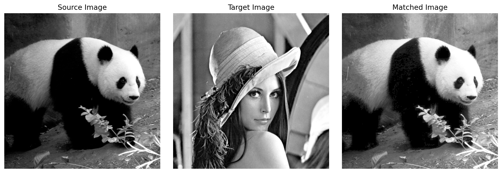
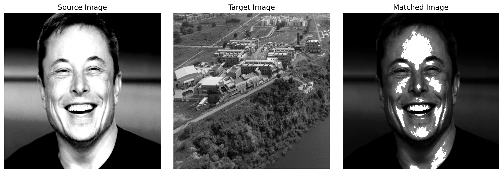
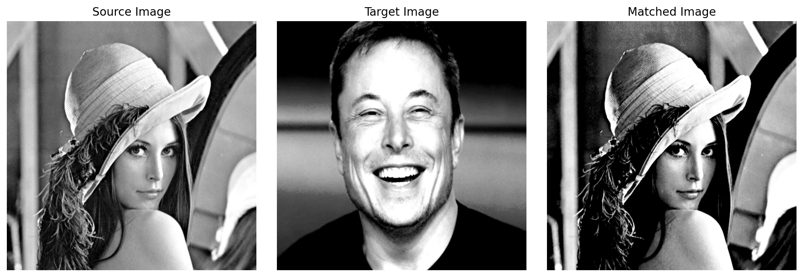
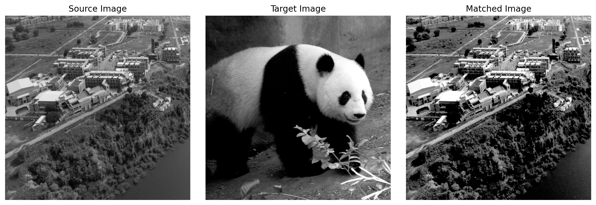

Code
import cv2
import numpy as np
import matplotlib.pyplot as plt
%matplotlib inline
%config InlineBackend.figure_format = 'retina'Devansh Lodha
December 2, 2024
We have a discrete grayscale image \(\{x\}\) with \(n_i\) as the number of occurences of gray level \(i\). The probability of occurence of a pixel of level \(i\) in the image is \[p_x(i)=p(x=i)=\frac{n_i}{n}, \qquad 0\leq i < L\] where \(L\) is the total number of grey levels in the image (here \(L=256\)), \(n\) is the total number of pixels in the image (here \(n = 512 \times 512\)), and \(p_x(i)\) is the image’s histogram for pixel value \(i\) normalized to \([0,1]\)
def imgToHist(img):
hist_data = np.zeros((256))
# counting number of pixels with a particular value between 0-255
for x_pixel in range(img.shape[0]):
for y_pixel in range(img.shape[1]):
pixel_value = int(img[x_pixel, y_pixel])
hist_data[pixel_value] += 1
# normalizing
hist_data/=(img.shape[0]*img.shape[1])
# returning the hist
return hist_dataWe define the cumulative distribution function corresponsing to \(i\) as \[\text{cdf}_x(i)=\sum\limits_{j=0}^{i}p_x(x=j)\] which is also the image’s accumulated normalized histogram. \ We would like to create a transformation of the form \(y=T(x)\) to produce a new image \(\{y\}\), with a flat histogram. Such as image would have a linearized cumulative distribution function across the value range \[\text{cdf}_y(i)=(i+1)K, \qquad 0 \leq i < L\] for some constant K. The properties of the CDF allow us to perform such a transform: \[y = T(k) = \text{cdf}_x(k)\] where k is in the range \([0, L-1]\). \(T\) maps the levels into \([0,1]\) since we’re using normalized histogram of \(\{x\}\). In order to map the map the values into their original range, the following transformation needs to be applied: \[y' = y \cdot (\text{max}\{x\} - \text{min}\{x\}) + \text{min}\{x\} = y \cdot (L-1)\] \(y\) is a real value while \(y'\) has to be integer. The mapped value \(y'\) should be \(0\) for the range of \(0 < y \leq \frac{1}{L}\). And \(y' = 1\) for \(\frac{1}{L}<y\leq \frac{2}{L}\), \(y' = 2\) for \(\frac{2}{L}<y\leq \frac{3}{L}\), … \(y' = L-1\) for \(\frac{L-1}{L}<y\leq 1\). Then the quantization formula for \(y\) to \(y'\) should be \[y'=\text{ceil}(L \cdot y)-1\] (\(y'=-1\) when \(y=0\), however, it does not happen just because \(y=0\) means that there is no pixel corresponding to that value.)
def equalize(img):
hist_data = imgToHist(img)
cdf_hist = np.cumsum(hist_data) # gives the CDF
equalized_hist = np.ceil(cdf_hist * 256) - 1 # maps back into original range
enhancedImg = np.zeros_like(img)
# now we need to replace initial pixel values with final pixel values
for x_pixel in range(img.shape[0]):
for y_pixel in range(img.shape[1]):
pixel_val = int(img[x_pixel, y_pixel])
enhancedImg[x_pixel, y_pixel] = equalized_hist[pixel_val]
return enhancedImgA function is defined to plot an images and their histograms before and after equalization. cmap is explicity defined to be gray since the default color map is virdis
def showEqualizedImg(image, enhanced_image):
source_histogram = imgToHist(image)
equalized_histogram = imgToHist(enhanced_image)
fig, axes = plt.subplots(1, 4, figsize=(16, 4))
# source image
axes[0].imshow(image, cmap='gray')
axes[0].set_title('Source Image')
axes[0].axis('off')
# source histogram
axes[1].bar(np.arange(len(source_histogram)), source_histogram, color = "Blue")
axes[1].set_title('Source Histogram')
# equalized histogram
axes[2].bar(np.arange(len(equalized_histogram)), equalized_histogram, color = "Red")
axes[2].set_title('Equalized Histogram')
# enhanced image
axes[3].imshow(enhanced_image, cmap='gray')
axes[3].set_title('Enhanced Image')
axes[3].axis('off')
plt.tight_layout()
plt.show()Consider a grayscale input image \(X\). It has a probability density function \(p_r(r)\), where \(r\) is a grayscale value, and \(p_r(r)\) is the probability of that value. This probability can easily be computed from the histogram of the image by \[p_r(r_j)=\frac{n_j}{n}\] Where \(n_j\) is the frequency of the grayscale value \(r_j\), and \(n\) is the total number of pixels in the image. Now consider a desired output probability density function \(p_z(z)\). A transformation of \(p_r(r)\) is needed to convert it to \(p_z(z)\). \ Each pdf (probability density function) can be mapped to its cumulative distribution function by \[S(r_k)=\sum\limits_{j=0}^{k}p_r(r_j), \qquad k =0,1,2,...,L-1\] \[G(z_k)=\sum\limits_{j=0}^{k}p_z(z_j), \qquad k =0,1,2,...,L-1\] Where L is the total number of gray levels (here \(L=256\)). \ The idea is to map each \(r\) value in \(X\) to the \(z\) value that has the same probability in the desired pdf: \[S(r_j) = G(z_i) \text{ or } z = G^{-1}(S(r))\]
Algorithm \ Given two images, the reference and the target images, we compute their histograms. Following, we calculate the cumulative distribution functions of the two images’ histograms: \(F_1\) for for the reference image and \(F_2\) for the target image. Then for each gray level \(G_1 \in [0, 255]\), we find the gray level \(G_2\) for which \(F_1(G_1)=F_2(G_2)\) and this is the result of histogram matching function: \(M(G_1) = G_2\). Finally, we apply the function \(M\) on each pixel of the reference image.
def match(source_image, target_image):
source_hist = imgToHist(source_image)
target_hist = imgToHist(target_image)
cdf_source_hist = np.cumsum(source_hist) # F1
cdf_target_hist = np.cumsum(target_hist) # F2
matched = np.zeros_like(source_image)
for x_pixel in range(source_image.shape[0]):
for y_pixel in range(source_image.shape[1]):
pixel_val = source_image[x_pixel, y_pixel] # G1
index = 255 # assume G2
# to find G2
for i in range(256):
if cdf_target_hist[i] - cdf_source_hist[pixel_val] >= 0:
index = i
break
# applying function on each pixel
matched[x_pixel, y_pixel] = index
return matchedA function is defined to source image, target image and image obtained upon matching. \ cmap is explicity defined to be gray since the default color map is virdis
def showMatchedImg(source_img, target_img, matched_img):
fig, axes = plt.subplots(1, 3, figsize=(12, 4))
# source image
axes[0].imshow(source_img, cmap='gray')
axes[0].set_title('Source Image')
axes[0].axis('off')
# target image
axes[1].imshow(target_img, cmap='gray')
axes[1].set_title('Target Image')
axes[1].axis('off')
# matched image
axes[2].imshow(matched_img, cmap='gray')
axes[2].set_title('Matched Image')
axes[2].axis('off')
plt.tight_layout()
plt.show()



[1] Wikipedia Contributors, “Histogram equalization,” Wikipedia, May 18, 2018. https://en.wikipedia.org/wiki/Histogram_equalization
[2] “Histogram matching,” Wikipedia, Feb. 07, 2022. https://en.wikipedia.org/wiki/Histogram_matching